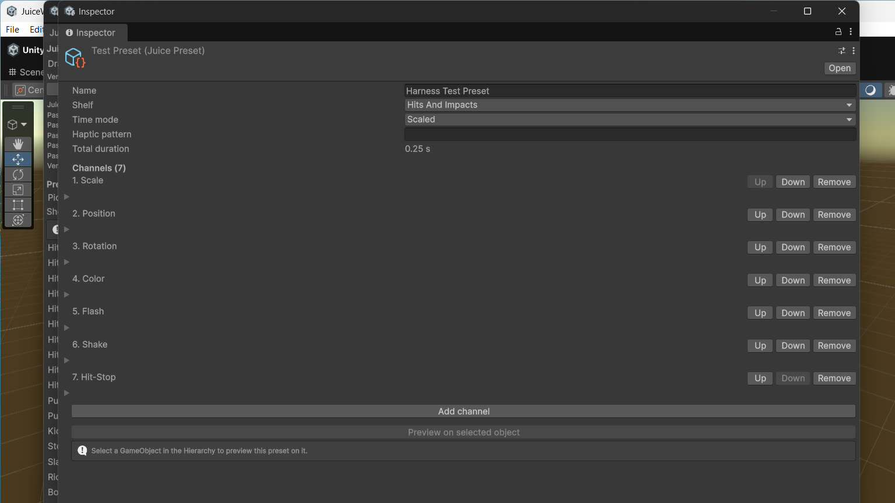
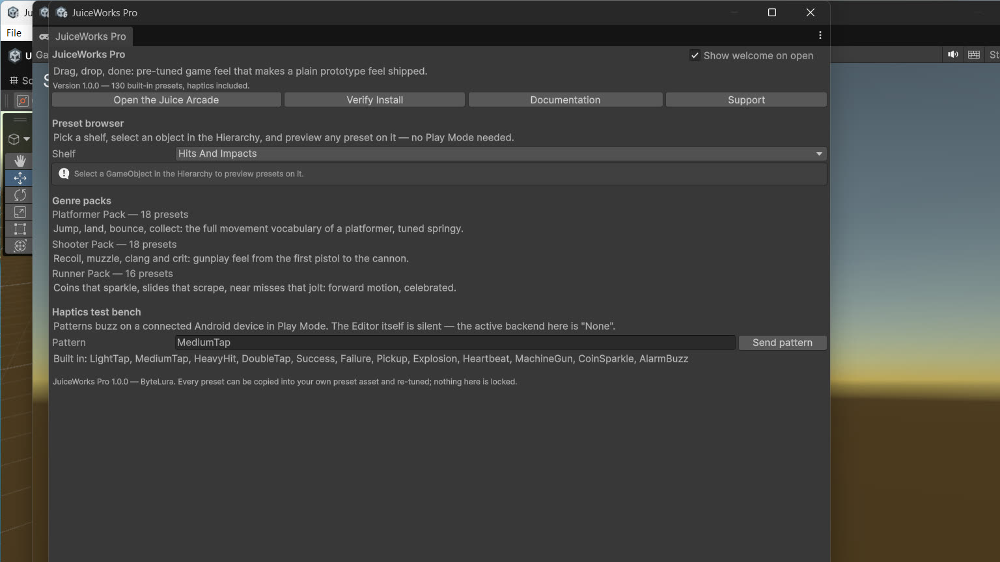
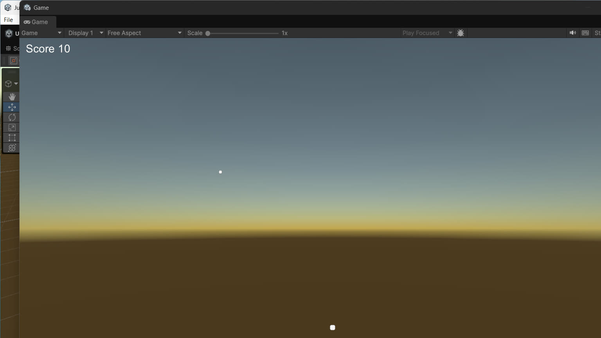

JuiceWorks Pro
A preset-first game-feel package for 2D and mobile projects, published by ByteLura.
A working prototype often feels flat: enemies vanish instead of dying, buttons do not acknowledge a tap, pickups do not celebrate. JuiceWorks Pro addresses that gap with a library of finished feedback effects instead of a blank set of primitives.

Who it is for
Developers shipping 2D and mobile games in Unity who want tuned feedback — hits, pickups, UI responses, camera shakes — without building a feedback system from primitives first. If your project is 3D-first, read the Honest Limits page before you buy.
What is in the box
- 130 pre-tuned feedback presets across nine shelves: User Interface, Hits & Impacts, Damage & Death, Pickups & Rewards, Movement, Combat & Weapons, Camera, Ambient & Idle, and Transitions.
- Seven feedback channels — Scale, Position, Rotation, Color, Flash, Shake, and HitStop — as the building blocks every preset is made of.
- Three genre packs — Platformer, Shooter, and Runner — that order the library the way a new project meets it.
- Playback components that need no code: JuicePlayer, JuiceTrigger, and JuiceSequencer, plus a one-line code path when you prefer it.
- A visual sequencer for chaining presets into timed sequences.
- Mobile haptics as part of the presets themselves: 12 built-in vibration patterns, named per preset.
- An editor home window at Tools > ByteLura > JuiceWorks Pro with a preset browser, edit-mode preview, genre pack shelf, haptics test bench, and a Verify Install check.
- The Juice Arcade sample: scripts plus a guided scene build that lets you feel the presets on tap targets.
The three ideas to keep
- Presets are data. The built-ins ship tuned; your own presets live beside them as assets you author in the inspector.
- Players play presets. Any object with a JuicePlayer can play any preset, from code, from a UnityEvent, or from a trigger.
- Nothing is placed by hand. No manager object, no folders to create, no wiring to make presets play — the driver creates itself when something first plays.
Screenshots




Scope in one line: Feedback for 2D sprites, uGUI elements, and camera rigs. For the honest limits of this version, read Honest Limits before you buy.
Support: bytelura@gmail.com — see Troubleshooting & Support.
New to the package? Start with the Quick Start.